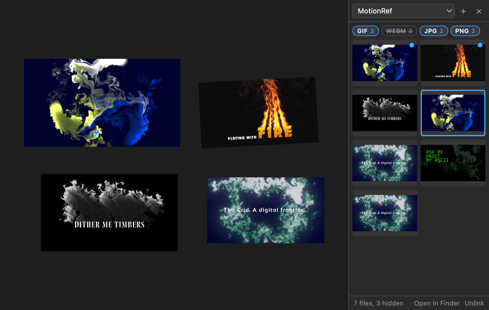

MOTIONREF
A reference board inside After Effects. Drag stills, GIFs, and video in from the Project panel and arrange them next to your comp while you work.
MotionRef is a blank, endless board docked in After Effects. Drop footage on it and it appears at its real size. Move it, scale it, rotate it, stack it, zoom in on details, and pan around. Each project keeps its own board, so your references are waiting the next time you open the .aep. Items link to the original files; nothing is copied into your project. The panel follows After Effects' light or dark appearance, and the board can be white, black, or any color.
Link a folder and its images and videos sit in a drawer beside the board, ready to drag in, again without importing anything into your project. Pair it with MotionRef Saver, a Chrome and Firefox extension that saves images, videos, and GIFs from Instagram, Pinterest, Dribbble, Behance, and the web into that folder.


PNG, JPEG, GIF, WebP, BMP, SVG, AVIF
Shown as-is. Animated GIFs play and loop on their own.
MP4 and MOV with H.264, MP4 with AV1, WebM (VP8, VP9)
Plays as-is. Videos start paused; click ▶ to play. They loop, muted.
PSD, TIFF, TGA, HEIC, OpenEXR, JPEG 2000, Illustrator, PDF
Converted to a preview with macOS's built-in tools the first time they're added.
ProRes, HEVC
Converted to a playable H.264 preview. Codecs macOS can no longer read, like QuickTime Animation, get a still preview frame rendered by After Effects.
Previews are cached in
~/Library/Caches/MotionRef and rebuilt when the source
file changes; the original is never touched. Previews don't keep
transparency. Image sequences show their first frame. Comps, solids,
and audio aren't added.
Adding
Select footage in the Project panel and drag it onto the board. Several items land in rows, in Project panel order, from where you drop them. Right-clicking the board offers Add Selected from Project too.
Folders
Click Folders (top right) and link a folder: a downloads folder, a reference library, anything. Its images and videos are listed newest first, subfolders included, and it's watched, so new files appear as they arrive, marked with a blue dot. Drag thumbnails onto the board, or double-click one; nothing is imported into your project. Videos play when you hover them.
Selecting
Moving, resizing, rotating
Several selected items share one transform box, so they move, scale, and rotate together.
Getting around
Right-click menu
Play / Pause, Bring to Front, Send to Back, Reverse Order (flips the reading order of the selected items), Reset Size, Reveal in Finder, Delete, Zoom to Fit, and Zoom to 100%. At the bottom, Background sets the board to Match After Effects (the default), White, Black, or a custom color from a picker; the choice applies to every project.
A browser extension that collects references into the folder
MotionRef's drawer shows (Downloads/MotionRef, or any
subfolder you choose).
On Instagram, Pinterest, Dribbble, and Behance
Hover a post's image and click Save, or just tap the site's own Save (Instagram's bookmark, or the Save button on Pinterest, Dribbble, and Behance): the image on screen is saved too. Images are saved at the largest size the page offers, like a pin's original. The button sits clear of each site's own buttons.
Hover a video and click Save Video. Instagram
streams its videos, so it plays the video from the start and records
it as it plays (keep the tab on screen), then saves the video, a
looping GIF of it, or both. With both, the GIF goes in the folder and
the video in its Videos subfolder; hide the WEBM chip in
MotionRef to see only the GIFs.
Anywhere on the web
Right-click an image and choose Save Image to MotionRef.
Installing in Firefox
- Download
MotionRef-Saver.xpiand open it in Firefox: drag it onto a Firefox window, or choose File → Open File…. - Click Add, then pin it from the puzzle-piece menu; click its icon for the settings.
- Save one image, then in MotionRef choose
Folders → Link Folder… and pick
Downloads/MotionRef.
Signed by Mozilla, so it stays installed (Firefox 140 or later). In Firefox the GIF is made in the Instagram tab after a video is saved, so that tab is busy for a few seconds.
Installing in Chrome
- Unzip
MotionRef-Saver.zipsomewhere you'll keep it. - Open
chrome://extensionsand turn on Developer mode (top right). - Click Load unpacked and choose the
MotionRef Saverfolder. Pin it from the puzzle-piece menu; click its icon for the settings (save folder, GIF size, video or GIF). - Save one image, then in MotionRef choose
Folders → Link Folder… and pick
Downloads/MotionRef.
Beta. It isn't in the Chrome Web Store, so Chrome loads it in developer mode. The autosave reads the sites' English labels and may need an update when a site changes its page. GIFs are 15 frames a second, up to 30 seconds. Behance's videos play in an embedded player it can't reach, so it saves images and GIFs there. It only runs on these four sites (and the image right-click menu); it doesn't read other sites.
- Install the extension — open the
.zxpwith a ZXP installer (aescripts ZXP Installer is free). - Restart After Effects and open Window → Extensions → MotionRef.
- Click the board once so the keyboard shortcuts reach it. Until then After Effects keeps its own (Space still previews your comp). Zooming and middle-drag panning work either way.
Boards are saved per project in
~/Library/Application Support/MotionRef/boards/. A file
that's moved or renamed shows as a "Missing" placeholder until it's
back.
The extension is signed with a self-signed certificate — your ZXP installer may show an "unverified publisher" notice. That's expected.
After Effects 2022 or later (developed and tested on AE 2026) on macOS. Previews rely on tools built into macOS, so Windows isn't supported. Everything runs locally — no accounts, no network calls.